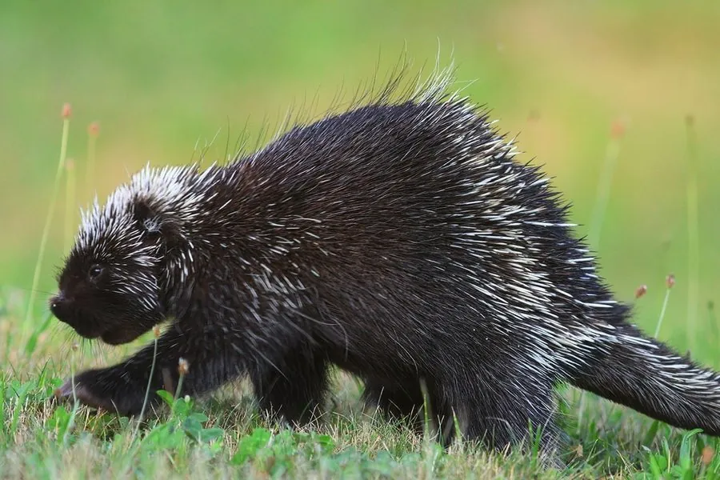

哺乳动物 · 动物界
北美豪猪 Erethizon dorsatum

北美森林中的大型啮齿动物，全身覆三万余根带倒钩的棘刺，善爬树啃食树皮，遇敌时背对对手竖起棘刺，是北美第二大的啮齿类。
- 分类
- 门脊索动物门纲哺乳纲目啮齿目科豪猪科属北美豪猪属
- 栖息环境
- 北方针叶林、混交林与落叶林，冬季偏好针叶树
- 地理分布
- 加拿大大部分地区与美国北部、西部，包括阿拉斯加
- 保护级别
- IUCN 无危（LC）
物种志
北美豪猪体形粗壮，成年体长 60–90 厘米，尾长 15–30 厘米，体重 3.5–18 千克，是北美体型第二大的啮齿动物。全身除面部、腹部和四肢内侧外覆盖棘刺，背部与尾部刺最长，约 8 厘米，刺尖带细密倒钩，一旦刺入皮肤会因体温与肌肉运动越陷越深，且刺上可能带有抗菌油脂。毛色黑褐，刺的基部白色、尖端黑色，形成斑驳外观。
它们栖息于北美北部的针叶林与混交林，多在树上活动，是出色的攀爬者，以树皮、嫩枝、针叶、芽和落叶为食，冬季会长时间停留在同一棵树上啃食树皮，留下明显痕迹。北美豪猪独居，夜间活动，遇敌时不逃跑而是背对对手、竖起棘刺并甩动尾巴，让捕食者满脸是刺。每年秋季繁殖，孕期约 7 个月，每胎一仔，幼仔出生时棘刺已软，数小时后变硬。它对树皮的大量啃食会影响林木生长，被视为林业害兽。
形态与习性
- 体长约 60–90 cm，尾长 15–30 cm
- 体重约 3.5–18 kg，秋季最重
- 棘刺数量全身约 3 万根，背部单刺长可达 8 cm
- 食性树皮、嫩枝、针叶、芽与落叶
- 繁殖秋季交配，孕期约 7 个月，每胎一仔
- 活动节律夜行性，善爬树，冬季活动减少但不冬眠
- 寿命野外约 6–10 年，饲养下可达 18 年
趣味知识
- 北美豪猪的棘刺带倒钩，刺进皮肤后会随肌肉运动越陷越深。
- 它遇敌不逃，而是背过身竖起刺并回身甩尾，让对手自己撞上来。
- 幼仔出生时棘刺是软的，几小时后才硬化，因此母兽分娩不会被扎伤。